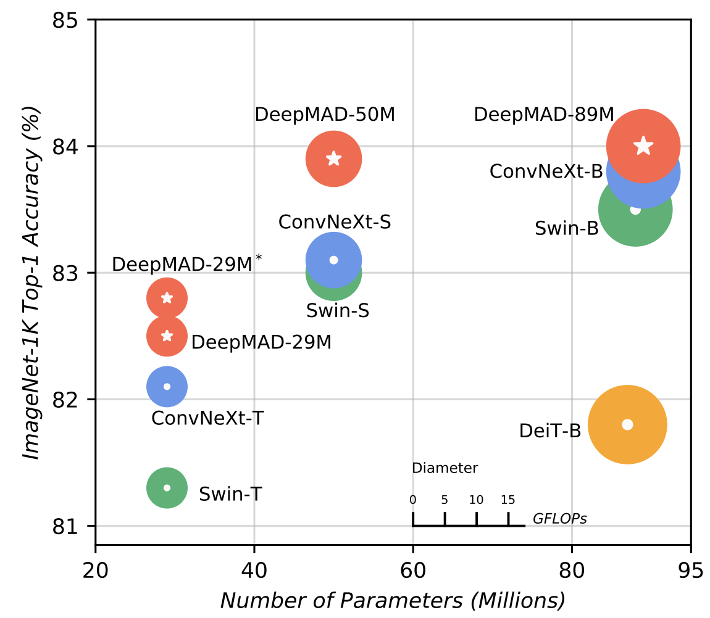
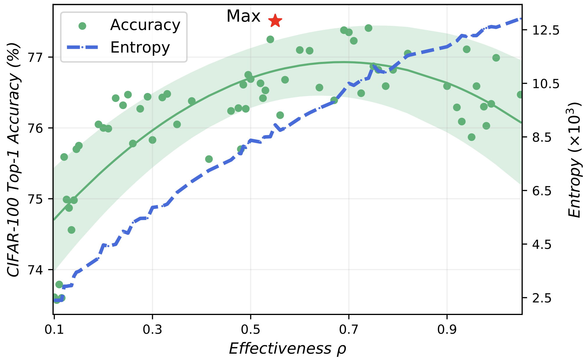
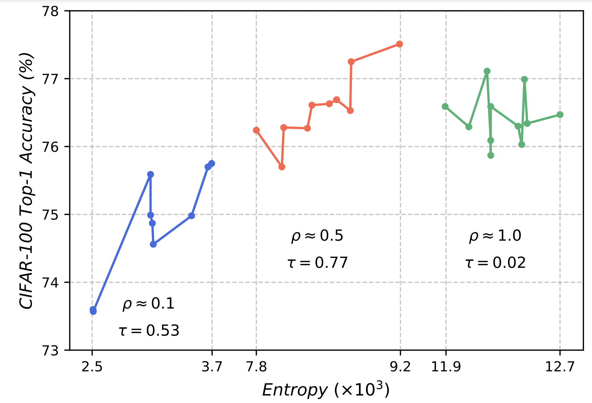
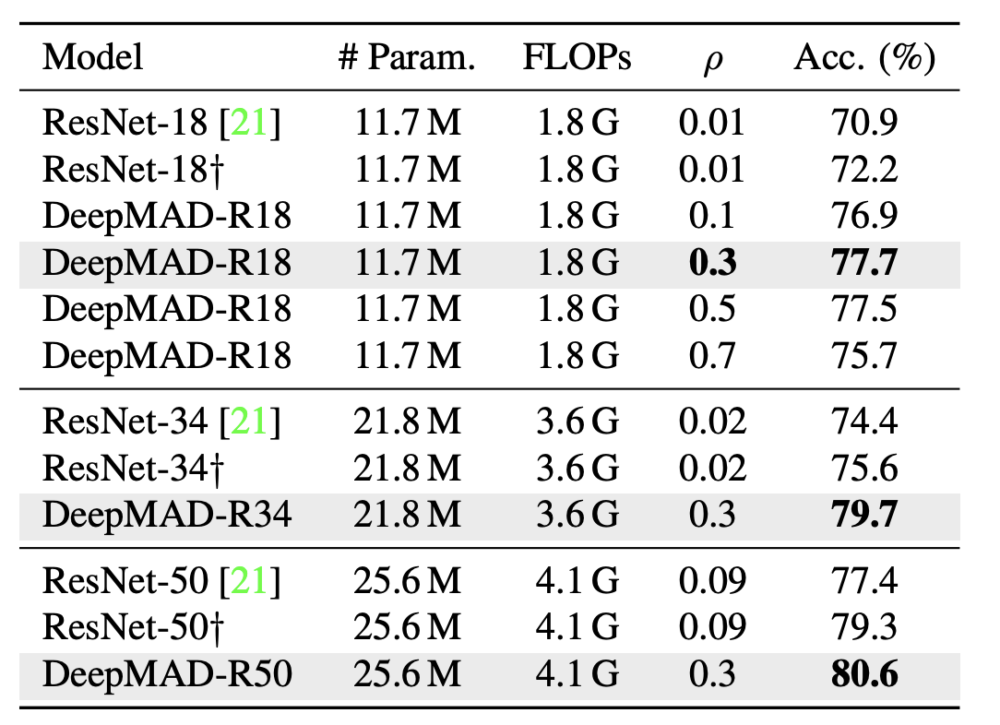
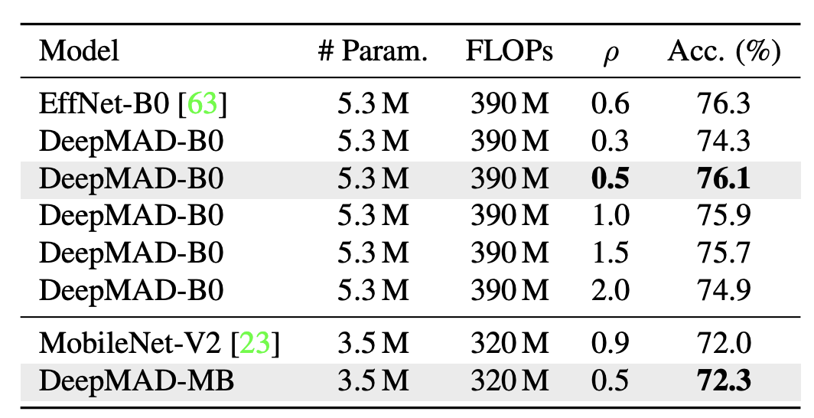
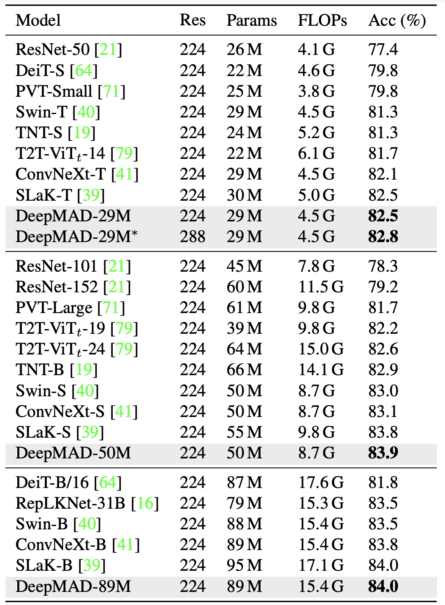

DeepMAD: Mathematical Architecture Design for Deep Convolutional Neural Network
A novel method for Deep Convolutional Neural Network Architecture Design.
A novel method for Deep Convolutional Neural Network Architecture Design.
The rapid advances in Vision Transformer (ViT) refresh the state-of-the-art performances in various vision tasks, overshadowing the conventional CNN-based models. This ignites a few recent striking-back researches in the CNN world showing that pure CNN models can achieve as good performance as ViT models when carefully tuned. While being encouraging, designing such high-performance CNN models is challenging, requiring non-trivial prior knowledge of network design. To this end, a novel framework termed Mathematical Architecture Design for Deep CNN~(DeepMAD) is proposed to design high-performance CNN models in a principled way. In DeepMAD, a CNN network is modeled as an information processing system whose expressiveness and effectiveness can be analytically formulated by their structural parameters. Then a constrained mathematical programming (MP) problem is proposed to optimize these structural parameters. The MP problem can be easily solved by off-the-shelf MP solvers on CPUs with a small memory footprint. In addition, DeepMAD is a pure mathematical framework: no GPU or training data is required during network design. The superiority of DeepMAD is validated on multiple large-scale computer vision benchmark datasets. Notably, only using the conventional convolutional layers, DeepMAD achieves 82.8\% top-1 accuracy on ImageNet-1k with 4.5G FLOPs and 29M Params, outperforming ConvNeXt-Tiny (82.1%), Swin-Tiny (81.3%) and He's original ResNet-50 (77.4%) at the same scale.
Comparison between DeepMAD models, Swin and ConvNeXt on ImageNet-1k. DeepMAD achieves better performance than Swin and ConvNeXt with the same scales.
Effectiveness ρ v.s. top-1 accuracy and entropy of each generated model on CIFAR-100. The best model is marked by a star. The entropy increases with ρ monotonically but the model accuracy does not. The optimal ρ∗ ≈ 0.5.
The architectures around ρ = {0.1, 0.5, 1.0} are selected and grouped by ρ. Kendall coefficient τ is used to measure the correlation.
DeepMAD v.s. ResNet on ImageNet-1K, using ResNet building block. †: model trained by our pipeline. ρ is tuned for DeepMAD-R18. DeepMAD achieves consistent improvements compared with ResNet18/34/50 with the same Params and FLOPs.
DeepMAD under mobile setting. Top-1 accuracy on ImageNet-1K. ρ is tuned for DeepMAD-B0.
DeepMAD v.s. SOTA ViT and CNN models on ImageNet-1K. ρ = 0.5 for all DeepMAD models. DeepMAD29M∗: uses 288x288 resolution while the Params and FLOPs keeps the same as DeepMAD-29M.
 @inproceedings{cvpr2023deepmad,
title={Deep{MAD}: Mathematical Architecture Design for Deep Convolutional Neural Network},
author={Xuan Shen, Yaohua Wang, Ming Lin, Yilun Huang, Hao Tang, Xiuyu Sun, Yanzhi Wang},
booktitle={Conference on Computer Vision and Pattern Recognition 2023},
year={2023},
url={https://openreview.net/forum?id=HCQqTcy2xG}
}
If you are interested in AIGC, especially digital humans and video generation, and are eager to take on exciting challenges, then this is the place for you. We are looking for talented, motivated and creative individuals to join our team. If you are interested, please send your CV to Yaohua.